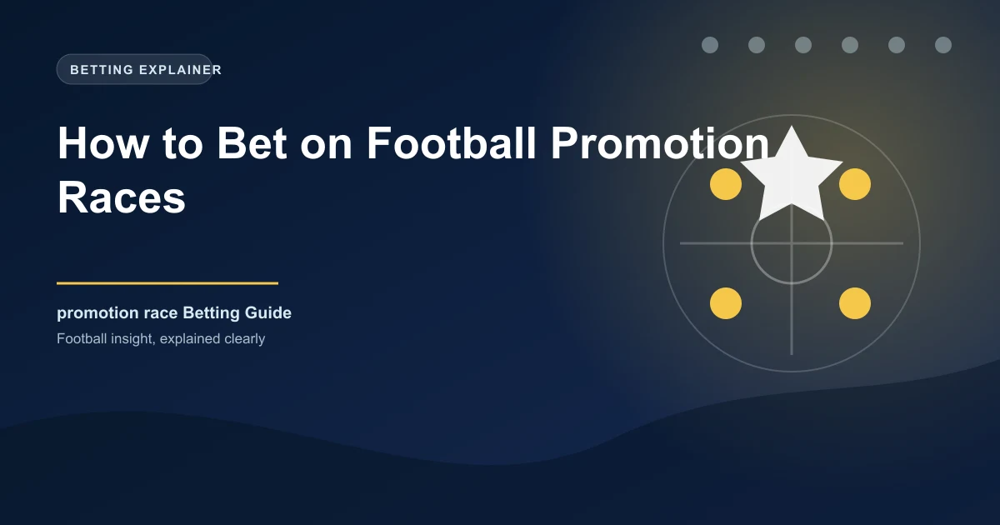

Promotion races are among the most dramatic and emotionally charged periods in football. As the season enters its final weeks, teams chasing promotion are playing for their futures, their manager's reputation, and in many cases, the financial fate of their entire club. For bettors, these high-stakes matches create unique opportunities that go beyond standard form analysis. Motivation, pressure, and the sheer intensity of promotion deciders can produce results that the raw numbers alone would not predict.
In this article, we will explore how promotion races create distinctive betting opportunities, how to analyze motivation levels in promotion-chasing teams, the statistical patterns that emerge during the business end of the season, and practical strategies for finding value when the stakes could not be higher.
The end of a football season is fundamentally different from the middle. By the time March and April arrive, the table tells a clear story. Some teams are chasing promotion, some are battling relegation, and some are playing for nothing more than pride and league position. This divergence in motivation creates value for bettors who understand how to analyze it.
In the middle of the season, both teams in a fixture generally have similar levels of motivation. Both are trying to accumulate points to reach their seasonal goals. But in the final weeks, a team fighting for promotion may face an opponent who is safely mid-table with nothing to play for. This motivational imbalance can lead to results that the odds do not always fully reflect.
The key reasons why promotion races create betting value include:
The market often assumes that motivated teams will automatically perform better. While there is truth to this, the reality is more nuanced. Understanding exactly when and how motivation translates into results is where the betting edge lies.
Not all promotion-chasing teams respond to pressure in the same way. Some teams thrive under the spotlight and produce their best football when it matters most. Others crumble under the weight of expectation. Understanding these psychological dynamics is crucial for betting on promotion races effectively.
Certain characteristics are common in teams that handle the pressure of a promotion chase well:
Conversely, some teams find the pressure of a promotion chase debilitating:
Consider two teams heading into the final three matches of the season, both two points behind the automatic promotion places. Team A has a squad with an average age of 29, a manager who has led two previous promotion campaigns, and a home record of W15 D2 L1. Team B has an average age of 23, a manager in their first full season, and has lost their last three home matches under pressure. While both teams have similar motivational stakes, their likelihood of delivering results is very different. The market may price them similarly, but the astute bettor will recognise the difference.
Research into end-of-season performance has identified what can be called the "promotion effect," the measurable impact that the prospect of promotion has on team performance metrics. This effect manifests in several ways:
Teams in strong promotion positions tend to score more goals in the final weeks of the season. This is partly due to more attacking tactical approaches and partly due to increased intensity and effort from players who know that every goal could be the difference between promotion and staying down. The average goals per match for promotion-chasing teams in the final five games tends to be noticeably higher than their season average.
However, the picture is more complicated when it comes to goals conceded. While promotion-chasing teams may be more attacking, they also tend to play more open football, which can leave them vulnerable to counter-attacks. Teams that are chasing the game from a losing position are particularly susceptible to conceding additional goals.
The win rate of promotion-chasing teams in the final weeks is typically higher than their season average when they face teams with nothing to play for. However, when they face fellow promotion candidates or relegation-threatened teams, the results become much more unpredictable because both teams have significant motivation.
Interestingly, the draw rate in high-stakes promotion matches tends to be slightly higher than average. Both teams may be cautious, afraid of losing rather than determined to win. This has implications for the 1X2 market, where backing the draw in tight promotion matches can sometimes offer value.
Look for promotion-chasing teams that are facing opponents with nothing to play for in the final weeks. These matches often have the largest motivational asymmetry and tend to produce the most predictable outcomes. Back the motivated team to win, but also consider over 2.5 goals if the team has a strong attacking record.
Analyzing historical data reveals several consistent patterns in how promotion races affect match outcomes:
The home advantage effect is amplified in promotion-deciding matches. The crowd's energy and emotion in a must-win home match can lift players to performances above their normal level. Promotion-chasing teams at home in the final weeks win at a higher rate than their overall home win percentage across the rest of the season.
Matches against teams that have nothing to play for are where the biggest edges exist. These "dead rubber" matches see promotion-chasing teams win more frequently and by larger margins than the pre-match odds typically suggest. The key is identifying these fixtures early and getting on before the market adjusts.
Teams involved in promotion races sometimes also have cup runs or midweek fixtures that add to their workload. Fixture congestion can negate some of the motivational advantage, particularly for squads with thin depth. Monitoring a team's fixture schedule is essential when assessing their likely performance in promotion deciders.
The final day of the season creates a unique betting scenario. Multiple matches are happening simultaneously, and the situation can change dramatically as goals go in elsewhere. Teams that need to win will attack regardless of the score, potentially leading to high-scoring, chaotic matches. The final day is one of the most unpredictable in football, and bettors should approach it with caution.
On the final day, consider betting on live markets rather than pre-match. The shifting dynamics as goals go in across multiple matches create opportunities that pre-match analysis cannot fully anticipate. Being able to react to unfolding events gives you an edge over pre-match bettors who locked in their positions earlier.
Finding value in promotion deciders requires a systematic approach that goes beyond simply backing the team with more to play for. Here is a step-by-step framework:
An often overlooked angle in promotion race betting is analyzing what happens after a team has secured promotion. Once the job is done, there is a natural relaxation in intensity that can affect results in the final matches of the season. Teams that have already secured promotion often rotate their squad, give fringe players minutes, and play with less urgency.
This creates opportunities in the remaining fixtures. If a newly promoted team is facing a team still fighting for something in the final weeks, the team with something to play for may have a motivational advantage despite being the weaker team on paper.
Conversely, teams that secure promotion early in the season may maintain their intensity if they are also competing for the title or a league record. Understanding the specific context of each team's situation is essential for accurate analysis.
Promotion races are inherently unpredictable. Pressure can cause even the best-prepared teams to falter. Always bet responsibly and never stake more than you can afford to lose, regardless of how confident the analysis may seem. The beauty of football is that the unexpected always has a chance of happening.
Certain betting markets tend to offer more value during the promotion race period:
Promotion races are a goldmine for bettors who are willing to do the work. By analyzing motivation, form under pressure, tactical approaches, and market odds, you can find genuine value in the final weeks of the season. The key is to be systematic, patient, and disciplined. Not every high-stakes match will offer value, but when it does, the rewards can be significant.
Access data-driven predictions for end-of-season matches across major leagues.
Build Your Ticket Win
Win